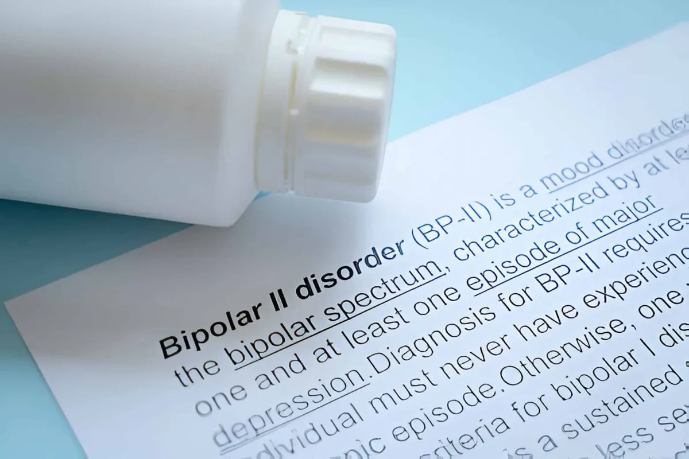

Bipolar Disorder Treatment By Senior Psychiatrist Dr. Gorav Gupta
Bipolar disorder, or manic depression is a brain disorder characterized by change in a person’s energy, mood, and ability to function. These mood swings are categorized as manic/ hypomanic or depressive mood.
People suffering from this mental disorder have episodes in which they feel overly happy and at other times feel sad, hopeless, and sluggish. In between these episodes, these individuals have periods of neutral mood. Such periods of high and low are treated as two poles of mood and hence popularly called bipolar disorder. Dr. Gorav Gupta is one of the best psychiatrist for bipolar disorder in Gurgaon and Delhi NCR.
As per latest studies, bipolar disorder affects anywhere from 0.5 per 1000 to 21 per 1000 Indians every year and is commonly found in individuals in the age range of 20 to 30 years. Researchers have also found that out of 150 individuals suffering from bipolar disorder, 70% are left untreated. Although this mental illness is a lifelong condition, proper medication, psychological counseling (psychotherapy), and some minor changes in lifestyle can make a huge difference.
Bipolar disorder is also known as manic-depressive illness, is a brain disorder that causes unusual mood shifts, fluctuation in energy, activity levels, and the ability to carry out day-to-day chores. This is different from the normal ups and downs that everybody faces from time to time. Bipolar disorder symptoms can result in relationships problems, poor job or school performance, and even suicide. Bipolar disorder can be treated, and people with this illness can lead fully functional lives.
Symptoms of Bipolar Disorder
The most distinguishing symptoms of bipolar disorder are mood swings, coupled with major drop in energy/ activity levels, sleep & thinking disorder as well as striking change in behavior. The three major symptoms that feature this disorder are depression, hypomania, and mania. An individual may suffer from various types of bipolar disorder based on different combinations of these symptoms.
Extreme fluctuation in energy, activity, sleep, and behavior go along with these changes in mood. It is possible for someone with bipolar disorder to experience a long-lasting period of unstable moods rather than specific episodes of depression or mania.
A person may be having an episode of bipolar disorder if he or she has a number of manic or depressive symptoms for most of the day, nearly every day, for at least one or two weeks. Sometimes symptoms are so severe that the person cannot function normally at work, school, or home. So it is important to consult with a top psychiatrist for bipolar disorder.
Symptoms of bipolar disorder are described below. Symptoms of mania or a manic episode include:

Bipolar I Symptoms
Diagnosis of Bipolar I requires:
- One phase of mania that should last for a week at least.
- Symptoms affecting the daily routine of an individual.
- Symptoms not at all related to any other medical or mental health condition.
It has been observed that sometimes such individuals may experience symptoms of both mania and depression (known as mixed features) or psychosis.
Bipolar II Symptoms
Diagnosis of Bipolar II requires:
- One phase of hypomania that should last for at least 4 days or more.
- Fluctuating mood and usual function of an individual due to hypomania which can be noticed by others.
- A period of major depression that lasts for 2 weeks or more.
- A period of major depression that involves one or more key depression symptoms which significantly influence day to day activity of such patients.
- Symptoms that are not related to any other medical and mental health condition.

It has also been observed that such individuals can show symptoms of psychosis, but only during phases of depression while at other times they show mixed mood behaviour, which is a combination of depression and hypomania.
Cyclothymia Symptoms
Diagnosis of Cyclothymia requires:
- Periods of hypomanic symptoms and periods of depression symptoms that shuffle and should last for 2 years or more.
- Symptoms that do not fit into the full criteria of an episode of depression or hypomania.
- Symptoms which are observed for atleast half of the 2 years and is never absent for more than 2 months.
- Symptoms that are not at all related to either any other medical condition or mental health condition.
- Symptoms which cause significant distress and affect daily life activities of an individual.
Fluctuating mood is a major symptom of cyclothymia. Studies have shown that cyclothymia is less severe than Bipolar I/ II, but it tends to last longer.
Hypomania usually does not influence an individual’s daily life while depression may affect the day-to-day activity of an individual and may lead to more serious distress.
Common symptoms of mania (“the highs“):
- Excessive hopefulness, happiness, and excitement.
- Restlessness.
- Sudden change in behaviour from being joyful to being angry, hostile, and irritable.
- Poor concentration
- Increase in energy level which lead to less sleep.
- Exceptionally high sex drive.
- Demonstrating poor judgement.
- Alcohol and drug abuse.
- Impulsive behaviour.
- Less appetite
- Boost in self-confidence and well being
- Easy distraction.
Common symptoms of mania (“the lows“):
- Feeling of sadness
- Loss in energy level
- Feelings of worthlessness or hopelessness
- Poor concentration
- Loss of memory
- To talk slowly
- Decrease in sex drive
- Trouble in taking decision
- Crying in uncontrollable manner
- Being irritable
- Insomnia
- Loss/ Gain in appetite
- Though of suicide attempt or death
Causes of Bipolar Disorder
Though the exact causes of bipolar disorder has not been identified, researchers have discovered factors contributing to the development of this mood disorder, such as:
Genetic factors: A family background (sibling or parent) of bipolar disorder.
Biological traits: Research studies have revealed that imbalances in hormones or neurotransmitters that affect the brain plays a major role in the development of bipolar disorder.
Environmental factors: Some life events, a significant loss, mental stress, abuse or any traumatic event contribute to an initial episode of bipolar disorder in an individual.
Complications
Serious problems can crop up when bipolar disorder is left untreated; some of these are listed below:
- Problem related to alcohol/ drug use
- Suicidal attempts
- Financial/ Legal problems
- Damaged/ Broken relationships
- Poor school/ work performance.
Bipolar Disorder Treatment by the best psychiatrist in Delhi NCR
The primary focus of bipolar disorder treatment is stabilizing a person’s mood and reducing the severity of commonly occurring symptoms. Some of the popular treatment of this mental illness is a combination of the following:
- Medication
- Change in lifestyle
- Counselling
Medication: Psychiatrists in Delhi NCR often prescribe a combination of the following drugs depending on the criticality of the patient:
Mood Stabilizing drugs such as lithium carbonate and valproic acid. Such drugs help reduce mania and even prevention of occurrence of depression. Valproic acid acts a mood stabilizer that helps in treating maniac or mixed phases of bipolar disorder in combination with carbamazepine, an antiepileptic drug. A new drug has recently come to the market named Lamotrigine, an antiepileptic that helps in preventing depression and reduce hypomania or mania.
Antidepressants namely fluoxetine (Prozac), Paroxetine (Paxil), luvoxamine (Luvox), etc help relieve the symptoms of anxiety and depression. These drugs work by rectifying imbalances of neurotransmitters available in the brain thus helping changing mood and behaviour.
Second-generation antipsychotics (SGAs) or atypical antipsychotics are a group of medications that include risperidone, olanzapine, clozapine, ziprasidone, quetiapine, paliperidone for treatment of schizophrenia and bipolar disorder. In addition, these drugs are used to treat insomnia and anxiety disorders in adults and aggressive behaviour and conduct disorders in children.
Anticonvulsants, or antiepileptic drugs or anti seizures drugs are diverse groups of pharmacological agents that are primarily used in the treatment of bipolar disorder and borderline personality disorder. These also prevent spreading of seizures in the brain. Psychiatrist treating bipolar disorder three agents lamotrigine, clonazepam, and divalproex for treating bipolar disorder and anxiety.
Medication for treating sleep disorders or anxiety help slow normal brain function and thus reduce these disorders. Depending on a person’s age, health status and severity of symptom, doctors for bipolar disorder at Delhi NCR and Gurgaon recommend different medicines. Common medicines that fall in this group are alprazolam (Xanax), estazolam (ProSom), diazepam (Valium), and triazolam (Halcion).
Counseling and Psychotherapy: Such treatments help relieve symptoms of bipolar disorder and manage this disorder. Cognitive-behavior therapy (CBT)help such patients help recognize and take essential steps to manage stress, identify early symptoms of episode and take essential steps to manage it, help maintain a stable mood for the longest possible time and thus help such patients with bipolar disorder maintain positive relationships at personal and professional life. Sometimes doctors or psychiatrists at Delhi NCR and Gurgaon prescribe electroconvulsive therapy (ECT) where other therapies don’t work. This treatment is effective for patients who are prone to attempt suicide.
Change in lifestyle: Few lifestyle changes help maintaining a stable mood and managing symptoms of bipolar disorder. Some of these are listed below:
- Maintain a regular routine in daily life.
- Follow a healthy diet chart
- Establish a regular sleeping pattern
- Exercise regularly.
Cure for Bipolar Disorder
As on date, there is no permanent cure for bipolar disorder but the right combination of mood stabilizers, bipolar medicines and behavioural therapy can help individuals suffering from this mental illness live healthy and fulfilling lives. People with bipolar disorder with ongoing treatment coupled with self-management can maintain a stable mood for prolonged periods. During recovery intervals, these individuals may have few or no symptoms.
Psychiatrist for Bipolar Disorder at Delhi, Gurgaon & NCR
As bipolar disorder cannot be permanently cured, thus medications prescribed by a good psychiatrist in Delhi NCR can bring positive changes in the life of a patient suffering from bipolar disorder. Dr Gorav Gupta, a senior psychiatrist in Delhi has 40+ years of experience in treating patients suffering from bipolar disorder. He has dealt with several types of patients having bipolar disorder and prescribed the right medicine, or therapy or a combination of both depending on the criticality of the case.
Best doctors for Bipolar Disorder
Among well-known doctors treating patients with bipolar disorder at Delhi NCR Dr Gorav Gupta has 40+ years of experience in treatment of bipolar disorder. Apart from medications, his psychotherapy treatment has significantly reduced symptoms of bipolar symptoms of many critical patients and these individuals are leading a happy and fulfilling life after consuming medicines and following a healthy diet and making few changes in their lifestyle.
Why is Dr. Gorav Gupta the Best Doctor for Bipolar Disorder Treatment?
Though various treatments and therapies are introduced to treat patients with bipolar disorder, there is still no permanent cure for this mental disorder. Treatment for this illness is usually lifelong and involves the right combination of medications and behavioral therapy.
Dr Gorav Gupta, a senior psychiatrist in Delhi with years of clinical experience in treating bipolar disorder. He is an active member of the Indian Association of Psychiatry, the Indian Association of Private Psychiatry, and Delhi Psychiatry Society.
At Tulasi clinic, Dr Gorav Gupta offers the following psychotherapy treatments for bipolar disorder:
- Cognitive behavioral therapy (CBT)
- Family-focused therapy
- Interpersonal and social rhythm therapy
- Electroconvulsive Therapy (ECT)
As a piece of advice, Dr Gupta advice patients to avoid alcohol at all times, maintain a regular routine, sleep for 7-8 hours, exercise regularly, eat healthy, manage stress and stay in close contact with their loved ones for a productive life and control the illness.